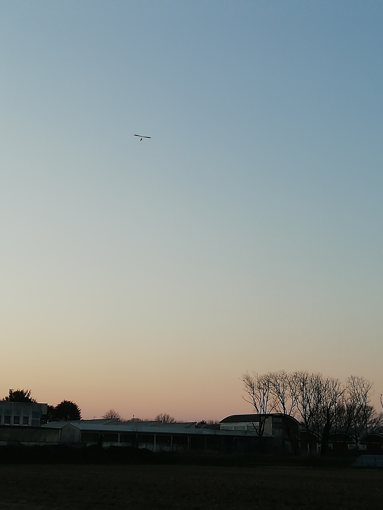
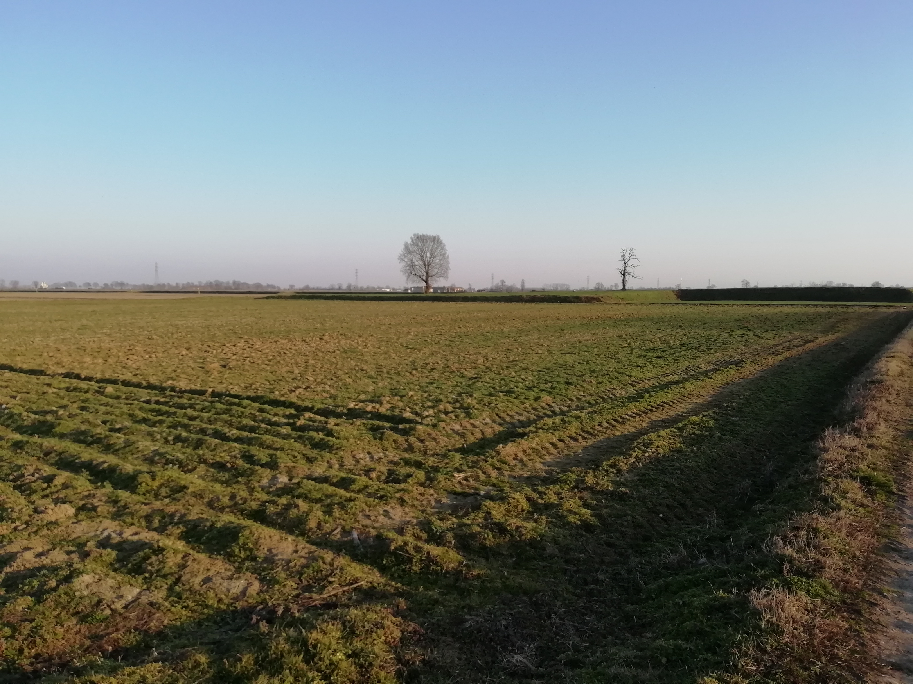
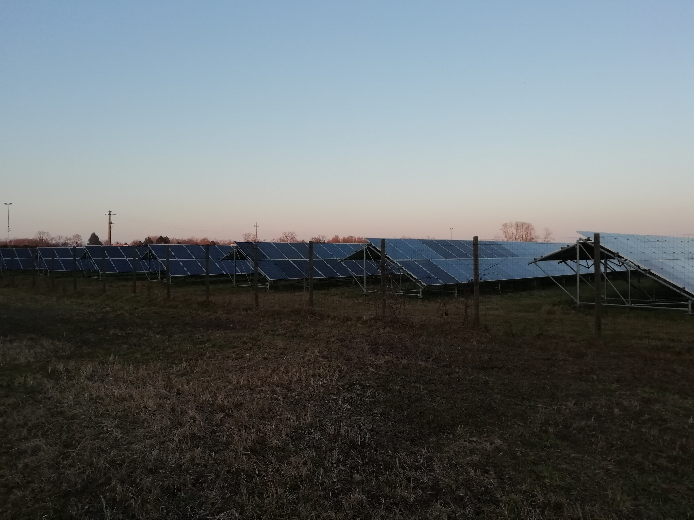
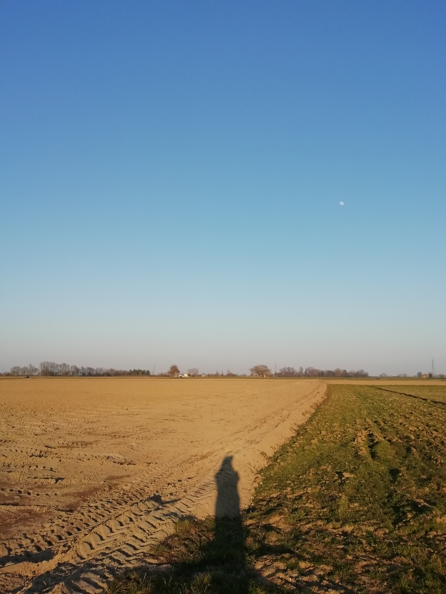
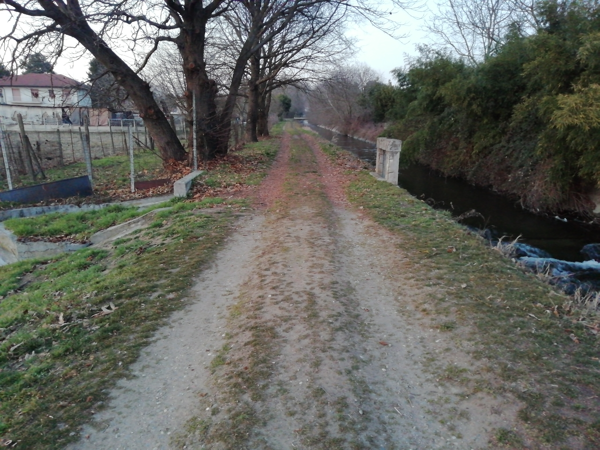
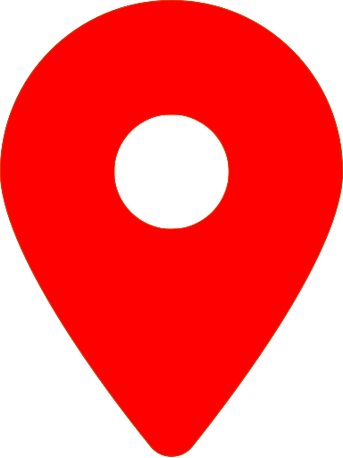

<!DOCTYPE html>
<head>
    <meta http-equiv="content-type" content="text/html; charset=UTF-8" />

        <script>
            L_NO_TOUCH = false;
            L_DISABLE_3D = false;
        </script>

    <style>html, body {width: 100%;height: 100%;margin: 0;padding: 0;}</style>
    <style>#map {position:absolute;top:0;bottom:0;right:0;left:0;}</style>
<script src="https://cdn.jsdelivr.net/npm/leaflet@1.6.0/dist/leaflet.js"></script>
<link rel="stylesheet" href="lib/EasyButton-master/src/easy-button.css">
<script src="lib/EasyButton-master/src/easy-button.js"></script>
    <script src="https://code.jquery.com/jquery-1.12.4.min.js"></script>
    <script src="https://maxcdn.bootstrapcdn.com/bootstrap/3.2.0/js/bootstrap.min.js"></script>
    <script src="https://cdnjs.cloudflare.com/ajax/libs/Leaflet.awesome-markers/2.0.2/leaflet.awesome-markers.js"></script>
    <link rel="stylesheet" href="https://cdn.jsdelivr.net/npm/leaflet@1.6.0/dist/leaflet.css"/>
    <link rel="stylesheet" href="https://maxcdn.bootstrapcdn.com/bootstrap/3.2.0/css/bootstrap.min.css"/>
    <link rel="stylesheet" href="https://maxcdn.bootstrapcdn.com/bootstrap/3.2.0/css/bootstrap-theme.min.css"/>
    <link rel="stylesheet" href="https://maxcdn.bootstrapcdn.com/font-awesome/4.6.3/css/font-awesome.min.css"/>
    <link rel="stylesheet" href="https://cdnjs.cloudflare.com/ajax/libs/Leaflet.awesome-markers/2.0.2/leaflet.awesome-markers.css"/>
    <link rel="stylesheet" href="https://cdn.jsdelivr.net/gh/python-visualization/folium/folium/templates/leaflet.awesome.rotate.min.css"/>

            <meta name="viewport" content="width=device-width,
                initial-scale=1.0, maximum-scale=1.0, user-scalable=no" />
            <style>
                #map_bfacfca4e96c467ab71290f2ae053dd5 {
                    position: relative;
                    width: 100.0%;
                    height: 100.0%;
                    left: 0.0%;
                    top: 0.0%;
                }
            </style>

</head>
<body>

            <div class="folium-map" id="map_bfacfca4e96c467ab71290f2ae053dd5" ></div>

</body>
<script>

            var map_bfacfca4e96c467ab71290f2ae053dd5 = L.map(
                "map_bfacfca4e96c467ab71290f2ae053dd5",
                {
                    center: [45.317245, 8.858102],
                    crs: L.CRS.EPSG3857,
                    maxBounds: [[45.151245, 8.692102], [45.483245, 9.024102000000001]],
                    zoom: 12,
                    zoomControl: false,
                    preferCanvas: false,
                }
            );


            var tile_layer_8a8a5be511c848bbbedd32868479b7bc = L.tileLayer(
                "https://tile.thunderforest.com/landscape/{z}/{x}/{y}.png?apikey=3dc24c77246845e5b1c941baf227ba56",
                {"attribution": "\u0026copy; \u003ca href=\"http://www.thunderforest.com/\"\u003eThunderforest\u003c/a\u003e, \u0026copy; \u003ca href=\"https://www.openstreetmap.org/copyright\"\u003eOpenStreetMap\u003c/a\u003e contributors", "detectRetina": false, "maxNativeZoom": 18, "maxZoom": 18, "minZoom": 12, "noWrap": false, "opacity": 1, "subdomains": "abc", "tms": false}
            ).addTo(map_bfacfca4e96c467ab71290f2ae053dd5);


            var marker_171d40a30b3140dcabffc0dac460076e = L.marker(
                [45.314712, 8.850959],
                {}
            ).addTo(map_bfacfca4e96c467ab71290f2ae053dd5);


        var custom_icon_6e86cafcd87e48b896c23f6fc8d2f27d = L.icon({"iconSize": [30, 30], "iconUrl": "https://emojipedia-us.s3.dualstack.us-west-1.amazonaws.com/thumbs/60/microsoft/74/automobile_1f697.png "});
        marker_171d40a30b3140dcabffc0dac460076e.setIcon(custom_icon_6e86cafcd87e48b896c23f6fc8d2f27d);


        var popup_d0618ca237094a82b759e1eaf8eaa855 = L.popup({"maxWidth": "270"});


            var html_d58875cf62564b218a690eeef4b204ea = $(`<div id="html_d58875cf62564b218a690eeef4b204ea" style="width: 100.0%; height: 100.0%;"><h1 style = "font-size: 30px;"><b>Traffico di Corso Torino</b></h1><br>PLACEHOLDER<br><a href="mailto:info@ecologiaacustica.org?subject=PAESAGGIO SONORO --- [segnalazione] --- audio: Traffico di Corso Torino"><i><br>Facci sapere cosa ne pensi di questo audio!</a><audio id="audio_AL_CORSO_TORINO_TRAFFICO" loop> <source src="dati/AL_CORSO_TORINO_TRAFFICO/corso torino 9 traffico.mp3" type="audio/mpeg"> </audio></div>`)[0];
            popup_d0618ca237094a82b759e1eaf8eaa855.setContent(html_d58875cf62564b218a690eeef4b204ea);


        marker_171d40a30b3140dcabffc0dac460076e.bindPopup(popup_d0618ca237094a82b759e1eaf8eaa855)
marker_171d40a30b3140dcabffc0dac460076e.on('click', function (e) {this.openPopup(); document.getElementById('audio_AL_CORSO_TORINO_TRAFFICO').play();});
        ;


            var marker_20370b4f3a3247afb188df71b470d993 = L.marker(
                [45.314191, 8.854374],
                {}
            ).addTo(map_bfacfca4e96c467ab71290f2ae053dd5);


        var custom_icon_c13b7d8e78554c9596a3d6fc0e5a0f44 = L.icon({"iconSize": [30, 30], "iconUrl": "https://emojipedia-us.s3.dualstack.us-west-1.amazonaws.com/thumbs/160/microsoft/74/water-wave_1f30a.png "});
        marker_20370b4f3a3247afb188df71b470d993.setIcon(custom_icon_c13b7d8e78554c9596a3d6fc0e5a0f44);


        var popup_c7159c46077e4d08a28b58fa1cc6f2db = L.popup({"maxWidth": "270"});


            var html_60c875972ece4557968436b54775baef = $(`<div id="html_60c875972ece4557968436b54775baef" style="width: 100.0%; height: 100.0%;"><h1 style = "font-size: 30px;"><b>Il mulino di Via Mulini</b></h1><br>PLACEHOLDER<br><a href="mailto:info@ecologiaacustica.org?subject=PAESAGGIO SONORO --- [segnalazione] --- audio: Il mulino di Via Mulini"><i><br>Facci sapere cosa ne pensi di questo audio!</a><audio id="audio_AL_VIA_MULINI_MULINO" loop> <source src="dati/AL_VIA_MULINI_MULINO/mulino via mulini.mp3" type="audio/mpeg"> </audio></div>`)[0];
            popup_c7159c46077e4d08a28b58fa1cc6f2db.setContent(html_60c875972ece4557968436b54775baef);


        marker_20370b4f3a3247afb188df71b470d993.bindPopup(popup_c7159c46077e4d08a28b58fa1cc6f2db)
marker_20370b4f3a3247afb188df71b470d993.on('click', function (e) {this.openPopup(); document.getElementById('audio_AL_VIA_MULINI_MULINO').play();});
        ;


            var marker_577ddfd4843d4a8ebe7a3b809bc6f90d = L.marker(
                [45.319865, 8.910479],
                {}
            ).addTo(map_bfacfca4e96c467ab71290f2ae053dd5);


        var custom_icon_575255ade9494f478620e909da6c244d = L.icon({"iconSize": [30, 30], "iconUrl": "https://emojipedia-us.s3.dualstack.us-west-1.amazonaws.com/thumbs/160/microsoft/74/duck_1f986.png "});
        marker_577ddfd4843d4a8ebe7a3b809bc6f90d.setIcon(custom_icon_575255ade9494f478620e909da6c244d);


        var popup_52fa62c95c284afab0467bf2a69eeb5f = L.popup({"maxWidth": "270"});


            var html_55b1f46933c44499a48c3a4c6f7daa44 = $(`<div id="html_55b1f46933c44499a48c3a4c6f7daa44" style="width: 100.0%; height: 100.0%;"><h1 style = "font-size: 30px;"><b>Papere</b></h1><br><br>PLACEHOLDER<br /><br><a href="mailto:info@ecologiaacustica.org?subject=PAESAGGIO SONORO --- [segnalazione] --- audio: Papere"><i><br>Facci sapere cosa ne pensi di questo audio!</a><audio id="audio_AL_AYALA" loop> <source src="dati/AL_AYALA/Copia di ayala-papere.mp3" type="audio/mpeg"> </audio></div>`)[0];
            popup_52fa62c95c284afab0467bf2a69eeb5f.setContent(html_55b1f46933c44499a48c3a4c6f7daa44);


        marker_577ddfd4843d4a8ebe7a3b809bc6f90d.bindPopup(popup_52fa62c95c284afab0467bf2a69eeb5f)
marker_577ddfd4843d4a8ebe7a3b809bc6f90d.on('click', function (e) {this.openPopup(); document.getElementById('audio_AL_AYALA').play();});
        ;


            var marker_879dce111c3b48ec83a17d213c7cb354 = L.marker(
                [45.319209, 8.911778],
                {}
            ).addTo(map_bfacfca4e96c467ab71290f2ae053dd5);


        var custom_icon_f0d3cbef910a4b118fb9ee60b22429e5 = L.icon({"iconSize": [30, 30], "iconUrl": "https://emojipedia-us.s3.dualstack.us-west-1.amazonaws.com/thumbs/160/microsoft/74/bird_1f426.png "});
        marker_879dce111c3b48ec83a17d213c7cb354.setIcon(custom_icon_f0d3cbef910a4b118fb9ee60b22429e5);


        var popup_e405f3d8233d4058825f7637bc744147 = L.popup({"maxWidth": "270"});


            var html_942285f664384947aff560a4610ff35c = $(`<div id="html_942285f664384947aff560a4610ff35c" style="width: 100.0%; height: 100.0%;"><h1 style = "font-size: 30px;"><b>Gallinelle</b></h1><br>PLACEHOLDER<br /><br><a href="mailto:info@ecologiaacustica.org?subject=PAESAGGIO SONORO --- [segnalazione] --- audio: Gallinelle"><i><br>Facci sapere cosa ne pensi di questo audio!</a><audio id="audio_AL_AYALA 2" loop> <source src="dati/AL_AYALA 2/Copia di gallinelle-ayala.mp3" type="audio/mpeg"> </audio></div>`)[0];
            popup_e405f3d8233d4058825f7637bc744147.setContent(html_942285f664384947aff560a4610ff35c);


        marker_879dce111c3b48ec83a17d213c7cb354.bindPopup(popup_e405f3d8233d4058825f7637bc744147)
marker_879dce111c3b48ec83a17d213c7cb354.on('click', function (e) {this.openPopup(); document.getElementById('audio_AL_AYALA 2').play();});
        ;


            var marker_90dcc52bc43540cbbad00f48ca25bc4a = L.marker(
                [45.320629, 8.909743],
                {}
            ).addTo(map_bfacfca4e96c467ab71290f2ae053dd5);


        var custom_icon_5c1e4fddcd19459781346522e2314960 = L.icon({"iconSize": [30, 30], "iconUrl": "https://emojipedia-us.s3.dualstack.us-west-1.amazonaws.com/thumbs/60/microsoft/74/older-man_emoji-modifier-fitzpatrick-type-1-2_1f474-1f3fb_1f3fb.png "});
        marker_90dcc52bc43540cbbad00f48ca25bc4a.setIcon(custom_icon_5c1e4fddcd19459781346522e2314960);


        var popup_7319dfd2c72f48b7b92d88b5968ca757 = L.popup({"maxWidth": "270"});


            var html_4ec4f25add7d4ae385f0795a2570ea92 = $(`<div id="html_4ec4f25add7d4ae385f0795a2570ea92" style="width: 100.0%; height: 100.0%;"><h1 style = "font-size: 30px;"><b>Anziani</b></h1><br>PLACEHOLDER<br /><br><a href="mailto:info@ecologiaacustica.org?subject=PAESAGGIO SONORO --- [segnalazione] --- audio: Anziani"><i><br>Facci sapere cosa ne pensi di questo audio!</a><audio id="audio_AL_AYALA 3" loop> <source src="dati/AL_AYALA 3/Copia di ayala vecchi che parlano.ogg" type="audio/ogg"> </audio></div>`)[0];
            popup_7319dfd2c72f48b7b92d88b5968ca757.setContent(html_4ec4f25add7d4ae385f0795a2570ea92);


        marker_90dcc52bc43540cbbad00f48ca25bc4a.bindPopup(popup_7319dfd2c72f48b7b92d88b5968ca757)
marker_90dcc52bc43540cbbad00f48ca25bc4a.on('click', function (e) {this.openPopup(); document.getElementById('audio_AL_AYALA 3').play();});
        ;


            var marker_c4d3485db2eb48edaa581f787c2884f4 = L.marker(
                [45.288236, 8.904653],
                {}
            ).addTo(map_bfacfca4e96c467ab71290f2ae053dd5);


        var custom_icon_248523e284de4a499695433edcd4439a = L.icon({"iconSize": [30, 30], "iconUrl": "https://emojipedia-us.s3.dualstack.us-west-1.amazonaws.com/thumbs/160/microsoft/74/water-wave_1f30a.png "});
        marker_c4d3485db2eb48edaa581f787c2884f4.setIcon(custom_icon_248523e284de4a499695433edcd4439a);


        var popup_e5a0dbcb6f094e03880d49d41bb71559 = L.popup({"maxWidth": "270"});


            var html_e9760d4414264cbea91acf55a5dac9b5 = $(`<div id="html_e9760d4414264cbea91acf55a5dac9b5" style="width: 100.0%; height: 100.0%;"><h1 style = "font-size: 30px;"><b>Marcite</b></h1><br><br>PLACEHOLDER<br /><br><a href="mailto:info@ecologiaacustica.org?subject=PAESAGGIO SONORO --- [segnalazione] --- audio: Marcite"><i><br>Facci sapere cosa ne pensi di questo audio!</a><audio id="audio_AL_SFORZESCA MARCITE" loop> <source src="dati/AL_SFORZESCA MARCITE/Copia di marcite-sforzesca.mp3" type="audio/mpeg"> </audio></div>`)[0];
            popup_e5a0dbcb6f094e03880d49d41bb71559.setContent(html_e9760d4414264cbea91acf55a5dac9b5);


        marker_c4d3485db2eb48edaa581f787c2884f4.bindPopup(popup_e5a0dbcb6f094e03880d49d41bb71559)
marker_c4d3485db2eb48edaa581f787c2884f4.on('click', function (e) {this.openPopup(); document.getElementById('audio_AL_SFORZESCA MARCITE').play();});
        ;


            var marker_b5715ac9101542999972efdb568ac73a = L.marker(
                [45.316647, 8.857617],
                {}
            ).addTo(map_bfacfca4e96c467ab71290f2ae053dd5);


        var custom_icon_99c4efd634074acd9c1dcf85c82802e1 = L.icon({"iconSize": [30, 30], "iconUrl": "https://emojipedia-us.s3.dualstack.us-west-1.amazonaws.com/thumbs/60/microsoft/74/bell_1f514.png "});
        marker_b5715ac9101542999972efdb568ac73a.setIcon(custom_icon_99c4efd634074acd9c1dcf85c82802e1);


        var popup_8f46046d40b64e788fd574e747bc7f1c = L.popup({"maxWidth": "270"});


            var html_5ca23c65055c466684dd9123d6dda1e3 = $(`<div id="html_5ca23c65055c466684dd9123d6dda1e3" style="width: 100.0%; height: 100.0%;"><h1 style = "font-size: 30px;"><b>Campane</b></h1><br><br>PLACEHOLDER<br /><br><a href="mailto:info@ecologiaacustica.org?subject=PAESAGGIO SONORO --- [segnalazione] --- audio: Campane"><i><br>Facci sapere cosa ne pensi di questo audio!</a><audio id="audio_AL_CASTELLO CAMPANE" loop> <source src="dati/AL_CASTELLO CAMPANE/Copia di castello-campane.mp3" type="audio/mpeg"> </audio></div>`)[0];
            popup_8f46046d40b64e788fd574e747bc7f1c.setContent(html_5ca23c65055c466684dd9123d6dda1e3);


        marker_b5715ac9101542999972efdb568ac73a.bindPopup(popup_8f46046d40b64e788fd574e747bc7f1c)
marker_b5715ac9101542999972efdb568ac73a.on('click', function (e) {this.openPopup(); document.getElementById('audio_AL_CASTELLO CAMPANE').play();});
        ;


            var marker_82add29501494c7f882c53ad857fa223 = L.marker(
                [45.315874, 8.858551],
                {}
            ).addTo(map_bfacfca4e96c467ab71290f2ae053dd5);


        var custom_icon_45485d875bac4d9faca7acc3ba05365b = L.icon({"iconSize": [30, 30], "iconUrl": "https://emojipedia-us.s3.dualstack.us-west-1.amazonaws.com/thumbs/60/microsoft/309/woman-walking_1f6b6-200d-2640-fe0f.png "});
        marker_82add29501494c7f882c53ad857fa223.setIcon(custom_icon_45485d875bac4d9faca7acc3ba05365b);


        var popup_5837b069066744389e87bc5583e9145d = L.popup({"maxWidth": "270"});


            var html_66c95f2675194299b2f0c91074b98234 = $(`<div id="html_66c95f2675194299b2f0c91074b98234" style="width: 100.0%; height: 100.0%;"><h1 style = "font-size: 30px;"><b>Strada coperta</b></h1><br><br>PLACEHOLDER<br /><br><a href="mailto:info@ecologiaacustica.org?subject=PAESAGGIO SONORO --- [segnalazione] --- audio: Strada coperta"><i><br>Facci sapere cosa ne pensi di questo audio!</a><audio id="audio_AL_STRADA COPERTA" loop> <source src="dati/AL_STRADA COPERTA/Copia di strada-coperta-sopra-portone.mp3" type="audio/mpeg"> </audio></div>`)[0];
            popup_5837b069066744389e87bc5583e9145d.setContent(html_66c95f2675194299b2f0c91074b98234);


        marker_82add29501494c7f882c53ad857fa223.bindPopup(popup_5837b069066744389e87bc5583e9145d)
marker_82add29501494c7f882c53ad857fa223.on('click', function (e) {this.openPopup(); document.getElementById('audio_AL_STRADA COPERTA').play();});
        ;


            var marker_be9de9d54c574e5c82f43decb49b4937 = L.marker(
                [45.313771, 8.804277],
                {}
            ).addTo(map_bfacfca4e96c467ab71290f2ae053dd5);


        var custom_icon_3ce83470c2c54921b5eee29b24eccf00 = L.icon({"iconSize": [30, 30], "iconUrl": "https://emojipedia-us.s3.dualstack.us-west-1.amazonaws.com/thumbs/160/microsoft/74/water-wave_1f30a.png "});
        marker_be9de9d54c574e5c82f43decb49b4937.setIcon(custom_icon_3ce83470c2c54921b5eee29b24eccf00);


        var popup_76d77f79c53f45079c1dd09084cf0f91 = L.popup({"maxWidth": "270"});


            var html_0c886febf85148f0906c58996fa4cd38 = $(`<div id="html_0c886febf85148f0906c58996fa4cd38" style="width: 100.0%; height: 100.0%;"><h1 style = "font-size: 30px;"><b>Strada Vignazza</b></h1><br>PLACEHOLDER<br /><br><a href="mailto:info@ecologiaacustica.org?subject=PAESAGGIO SONORO --- [segnalazione] --- audio: Strada Vignazza"><i><br>Facci sapere cosa ne pensi di questo audio!</a><audio id="audio_AL_STRADA VIGNAZZA PICCOLINI" loop> <source src="dati/AL_STRADA VIGNAZZA PICCOLINI/Copia di strada-vignazza-piccolini-su-terdoppio.mp3" type="audio/mpeg"> </audio></div>`)[0];
            popup_76d77f79c53f45079c1dd09084cf0f91.setContent(html_0c886febf85148f0906c58996fa4cd38);


        marker_be9de9d54c574e5c82f43decb49b4937.bindPopup(popup_76d77f79c53f45079c1dd09084cf0f91)
marker_be9de9d54c574e5c82f43decb49b4937.on('click', function (e) {this.openPopup(); document.getElementById('audio_AL_STRADA VIGNAZZA PICCOLINI').play();});
        ;


            var marker_1a244e6189884c6bb36316c5513e2781 = L.marker(
                [45.318815, 8.80616],
                {}
            ).addTo(map_bfacfca4e96c467ab71290f2ae053dd5);


        var custom_icon_f3fd10a2fc2e488a8c61a66b56322bd2 = L.icon({"iconSize": [30, 30], "iconUrl": "https://emojipedia-us.s3.dualstack.us-west-1.amazonaws.com/thumbs/160/microsoft/74/water-wave_1f30a.png "});
        marker_1a244e6189884c6bb36316c5513e2781.setIcon(custom_icon_f3fd10a2fc2e488a8c61a66b56322bd2);


        var popup_ac0fc0bc48fd4843b6107ae8860f348e = L.popup({"maxWidth": "270"});


            var html_cd8f6b1f40a74549b928c862b3dd3676 = $(`<div id="html_cd8f6b1f40a74549b928c862b3dd3676" style="width: 100.0%; height: 100.0%;"><h1 style = "font-size: 30px;"><b>Piccolini</b></h1><br><br>PLACEHOLDER<br /><br><a href="mailto:info@ecologiaacustica.org?subject=PAESAGGIO SONORO --- [segnalazione] --- audio: Piccolini"><i><br>Facci sapere cosa ne pensi di questo audio!</a><audio id="audio_AL_TERDOPPIO PICCOLINI" loop> <source src="dati/AL_TERDOPPIO PICCOLINI/Copia di st. terdoppio piccolini.ogg" type="audio/ogg"> </audio></div>`)[0];
            popup_ac0fc0bc48fd4843b6107ae8860f348e.setContent(html_cd8f6b1f40a74549b928c862b3dd3676);


        marker_1a244e6189884c6bb36316c5513e2781.bindPopup(popup_ac0fc0bc48fd4843b6107ae8860f348e)
marker_1a244e6189884c6bb36316c5513e2781.on('click', function (e) {this.openPopup(); document.getElementById('audio_AL_TERDOPPIO PICCOLINI').play();});
        ;


            var marker_6aefcaa5bf244b49aea02d87ffe8119e = L.marker(
                [45.310196, 8.812298],
                {}
            ).addTo(map_bfacfca4e96c467ab71290f2ae053dd5);


        var custom_icon_d81dc7b723a2461799f0ee930947d70c = L.icon({"iconSize": [30, 30], "iconUrl": "https://emojipedia-us.s3.dualstack.us-west-1.amazonaws.com/thumbs/60/microsoft/74/fallen-leaf_1f342.png "});
        marker_6aefcaa5bf244b49aea02d87ffe8119e.setIcon(custom_icon_d81dc7b723a2461799f0ee930947d70c);


        var popup_5b9f1469b2e14addb645027943b5a410 = L.popup({"maxWidth": "270"});


            var html_b4f80ee69ed341c79b30c1c7fec37ae0 = $(`<div id="html_b4f80ee69ed341c79b30c1c7fec37ae0" style="width: 100.0%; height: 100.0%;"><h1 style = "font-size: 30px;"><b>Via Castellana</b></h1><br>PLACEHOLDER<br /><br><a href="mailto:info@ecologiaacustica.org?subject=PAESAGGIO SONORO --- [segnalazione] --- audio: Via Castellana"><i><br>Facci sapere cosa ne pensi di questo audio!</a><audio id="audio_AL_VIA CASTELLANA" loop> <source src="dati/AL_VIA CASTELLANA/Copia di via-castellana-piccolini.mp3" type="audio/mpeg"> </audio></div>`)[0];
            popup_5b9f1469b2e14addb645027943b5a410.setContent(html_b4f80ee69ed341c79b30c1c7fec37ae0);


        marker_6aefcaa5bf244b49aea02d87ffe8119e.bindPopup(popup_5b9f1469b2e14addb645027943b5a410)
marker_6aefcaa5bf244b49aea02d87ffe8119e.on('click', function (e) {this.openPopup(); document.getElementById('audio_AL_VIA CASTELLANA').play();});
        ;


            var marker_e4c7b2dfa28247568e5b90dc463cbab0 = L.marker(
                [45.302898, 8.934893],
                {}
            ).addTo(map_bfacfca4e96c467ab71290f2ae053dd5);


        var custom_icon_f4ba4e80759f417bbfb9138557a2ad22 = L.icon({"iconSize": [30, 30], "iconUrl": "https://emojipedia-us.s3.dualstack.us-west-1.amazonaws.com/thumbs/160/microsoft/153/swan_1f9a2.png "});
        marker_e4c7b2dfa28247568e5b90dc463cbab0.setIcon(custom_icon_f4ba4e80759f417bbfb9138557a2ad22);


        var popup_d7867452202548348436de9802648b71 = L.popup({"maxWidth": "270"});


            var html_7240b1050aa74b8cb97431f2e1e3de6b = $(`<div id="html_7240b1050aa74b8cb97431f2e1e3de6b" style="width: 100.0%; height: 100.0%;"><h1 style = "font-size: 30px;"><b>Lapide Boselli</b></h1><br>PLACEHOLDER<br /><br><a href="mailto:info@ecologiaacustica.org?subject=PAESAGGIO SONORO --- [segnalazione] --- audio: Lapide Boselli"><i><br>Facci sapere cosa ne pensi di questo audio!</a><audio id="audio_AL_LAPIDE BOSELLI" loop> <source src="dati/AL_LAPIDE BOSELLI/Copia di volo-cigni-lapide-boselli.mp3" type="audio/mpeg"> </audio></div>`)[0];
            popup_d7867452202548348436de9802648b71.setContent(html_7240b1050aa74b8cb97431f2e1e3de6b);


        marker_e4c7b2dfa28247568e5b90dc463cbab0.bindPopup(popup_d7867452202548348436de9802648b71)
marker_e4c7b2dfa28247568e5b90dc463cbab0.on('click', function (e) {this.openPopup(); document.getElementById('audio_AL_LAPIDE BOSELLI').play();});
        ;


            var marker_d205b98a68534934a697f7c5d1009562 = L.marker(
                [45.31646, 8.87454],
                {}
            ).addTo(map_bfacfca4e96c467ab71290f2ae053dd5);


        var custom_icon_fe37ca967b3d4a2cb33b2bb1cad899fd = L.icon({"iconSize": [30, 30], "iconUrl": "https://emojipedia-us.s3.dualstack.us-west-1.amazonaws.com/thumbs/60/microsoft/74/roller-coaster_1f3a2.png "});
        marker_d205b98a68534934a697f7c5d1009562.setIcon(custom_icon_fe37ca967b3d4a2cb33b2bb1cad899fd);


        var popup_e43b5ab390324918a92b98f5eb444f7d = L.popup({"maxWidth": "270"});


            var html_86fc4586d51a405590f4e19492b825bc = $(`<div id="html_86fc4586d51a405590f4e19492b825bc" style="width: 100.0%; height: 100.0%;"><h1 style = "font-size: 30px;"><b>Luna Park</b></h1><br>PLACEHOLDER<br /><br><a href="mailto:info@ecologiaacustica.org?subject=PAESAGGIO SONORO --- [segnalazione] --- audio: Luna Park"><i><br>Facci sapere cosa ne pensi di questo audio!</a><audio id="audio_AL_LUNA PARK" loop> <source src="dati/AL_LUNA PARK/Copia di luna park.ogg" type="audio/ogg"> </audio></div>`)[0];
            popup_e43b5ab390324918a92b98f5eb444f7d.setContent(html_86fc4586d51a405590f4e19492b825bc);


        marker_d205b98a68534934a697f7c5d1009562.bindPopup(popup_e43b5ab390324918a92b98f5eb444f7d)
marker_d205b98a68534934a697f7c5d1009562.on('click', function (e) {this.openPopup(); document.getElementById('audio_AL_LUNA PARK').play();});
        ;


            var marker_6f79b79ad30e4a13904358b14dff1598 = L.marker(
                [45.316389, 8.856819],
                {}
            ).addTo(map_bfacfca4e96c467ab71290f2ae053dd5);


        var custom_icon_e98917de29454847b6cd47167b5e51a7 = L.icon({"iconSize": [30, 30], "iconUrl": "https://emojipedia-us.s3.dualstack.us-west-1.amazonaws.com/thumbs/60/microsoft/74/speaking-head-in-silhouette_1f5e3.png "});
        marker_6f79b79ad30e4a13904358b14dff1598.setIcon(custom_icon_e98917de29454847b6cd47167b5e51a7);


        var popup_b1d3667e71004ca88145b4a2bbe67eab = L.popup({"maxWidth": "270"});


            var html_2317e112a78d4f319ad887fce9062b4e = $(`<div id="html_2317e112a78d4f319ad887fce9062b4e" style="width: 100.0%; height: 100.0%;"><h1 style = "font-size: 30px;"><b>Castello alle 18</b></h1><br>PLACEHOLDER<br><a href="mailto:info@ecologiaacustica.org?subject=PAESAGGIO SONORO --- [segnalazione] --- audio: Castello alle 18"><i><br>Facci sapere cosa ne pensi di questo audio!</a><audio id="audio_AN_CASTELLO_ORE_18" loop> <source src="dati/AN_CASTELLO_ORE_18/castello ore 18.mp3" type="audio/mpeg"> </audio></div>`)[0];
            popup_b1d3667e71004ca88145b4a2bbe67eab.setContent(html_2317e112a78d4f319ad887fce9062b4e);


        marker_6f79b79ad30e4a13904358b14dff1598.bindPopup(popup_b1d3667e71004ca88145b4a2bbe67eab)
marker_6f79b79ad30e4a13904358b14dff1598.on('click', function (e) {this.openPopup(); document.getElementById('audio_AN_CASTELLO_ORE_18').play();});
        ;


            var marker_8da685d69b0540f08629a4febad3a5a4 = L.marker(
                [45.315783, 8.856105],
                {}
            ).addTo(map_bfacfca4e96c467ab71290f2ae053dd5);


        var custom_icon_20002386513b4ed991e0fb01e66fe1df = L.icon({"iconSize": [30, 30], "iconUrl": "https://emojipedia-us.s3.dualstack.us-west-1.amazonaws.com/thumbs/60/microsoft/74/speaking-head-in-silhouette_1f5e3.png "});
        marker_8da685d69b0540f08629a4febad3a5a4.setIcon(custom_icon_20002386513b4ed991e0fb01e66fe1df);


        var popup_11c6dc19d151449a86fb8804fcf7ba4d = L.popup({"maxWidth": "270"});


            var html_28999a12c307456996475d5145ffd44e = $(`<div id="html_28999a12c307456996475d5145ffd44e" style="width: 100.0%; height: 100.0%;"><h1 style = "font-size: 30px;"><b>Portone</b></h1><br>PLACEHOLDER<br><a href="mailto:info@ecologiaacustica.org?subject=PAESAGGIO SONORO --- [segnalazione] --- audio: Portone"><i><br>Facci sapere cosa ne pensi di questo audio!</a><audio id="audio_AN_PORTONE" loop> <source src="dati/AN_PORTONE/portone.mp3" type="audio/mpeg"> </audio></div>`)[0];
            popup_11c6dc19d151449a86fb8804fcf7ba4d.setContent(html_28999a12c307456996475d5145ffd44e);


        marker_8da685d69b0540f08629a4febad3a5a4.bindPopup(popup_11c6dc19d151449a86fb8804fcf7ba4d)
marker_8da685d69b0540f08629a4febad3a5a4.on('click', function (e) {this.openPopup(); document.getElementById('audio_AN_PORTONE').play();});
        ;


            var marker_f7ca71f04a9f4cd295609d7ad6738630 = L.marker(
                [45.314307, 8.854067],
                {}
            ).addTo(map_bfacfca4e96c467ab71290f2ae053dd5);


        var custom_icon_ae91769983014b69bde520e82f74d1c3 = L.icon({"iconSize": [30, 30], "iconUrl": "https://emojipedia-us.s3.dualstack.us-west-1.amazonaws.com/thumbs/160/microsoft/74/water-wave_1f30a.png "});
        marker_f7ca71f04a9f4cd295609d7ad6738630.setIcon(custom_icon_ae91769983014b69bde520e82f74d1c3);


        var popup_cb06c5c0bed04b5fafeb2efff19a9980 = L.popup({"maxWidth": "270"});


            var html_edad801b514540cf9ac17f8144db18fa = $(`<div id="html_edad801b514540cf9ac17f8144db18fa" style="width: 100.0%; height: 100.0%;"><h1 style = "font-size: 30px;"><b>Via Mulini</b></h1><br>PLACEHOLDER<br><a href="mailto:info@ecologiaacustica.org?subject=PAESAGGIO SONORO --- [segnalazione] --- audio: Via Mulini"><i><br>Facci sapere cosa ne pensi di questo audio!</a><audio id="audio_AN_VIA_MULINI" loop> <source src="dati/AN_VIA_MULINI/via mulini acqua.mp3" type="audio/mpeg"> </audio></div>`)[0];
            popup_cb06c5c0bed04b5fafeb2efff19a9980.setContent(html_edad801b514540cf9ac17f8144db18fa);


        marker_f7ca71f04a9f4cd295609d7ad6738630.bindPopup(popup_cb06c5c0bed04b5fafeb2efff19a9980)
marker_f7ca71f04a9f4cd295609d7ad6738630.on('click', function (e) {this.openPopup(); document.getElementById('audio_AN_VIA_MULINI').play();});
        ;


            var marker_41681f2a21064e36b253b0f9449ea0cf = L.marker(
                [45.3230625, 8.850245651],
                {}
            ).addTo(map_bfacfca4e96c467ab71290f2ae053dd5);


        var custom_icon_2c1ee26f09f14d99bb3772485bce1123 = L.icon({"iconSize": [30, 30], "iconUrl": "https://emojipedia-us.s3.dualstack.us-west-1.amazonaws.com/thumbs/160/microsoft/74/motor-scooter_1f6f5.png "});
        marker_41681f2a21064e36b253b0f9449ea0cf.setIcon(custom_icon_2c1ee26f09f14d99bb3772485bce1123);


        var popup_ba15c407cfd1451089d20f1708120154 = L.popup({"maxWidth": "270"});


            var html_83a9ea4d4edb4fe0a25feecfe0268fa8 = $(`<div id="html_83a9ea4d4edb4fe0a25feecfe0268fa8" style="width: 100.0%; height: 100.0%;"><h1 style = "font-size: 30px;"><b>Pizzeria</b></h1><br>PLACEHOLDER<br><a href="mailto:info@ecologiaacustica.org?subject=PAESAGGIO SONORO --- [segnalazione] --- audio: Pizzeria"><i><br>Facci sapere cosa ne pensi di questo audio!</a><audio id="audio_GU_VIALE_MONTEGRAPPA_PIZZERIA" loop> <source src="dati/GU_VIALE_MONTEGRAPPA_PIZZERIA/pizzeria.ogg" type="audio/ogg"> </audio></div>`)[0];
            popup_ba15c407cfd1451089d20f1708120154.setContent(html_83a9ea4d4edb4fe0a25feecfe0268fa8);


        marker_41681f2a21064e36b253b0f9449ea0cf.bindPopup(popup_ba15c407cfd1451089d20f1708120154)
marker_41681f2a21064e36b253b0f9449ea0cf.on('click', function (e) {this.openPopup(); document.getElementById('audio_GU_VIALE_MONTEGRAPPA_PIZZERIA').play();});
        ;


            var marker_1ca6daeb29604e4498098dd73fe0c4c2 = L.marker(
                [45.31211904, 8.860001045],
                {}
            ).addTo(map_bfacfca4e96c467ab71290f2ae053dd5);


        var custom_icon_27096276bf964a5ea9a9275f4c89c0bc = L.icon({"iconSize": [30, 30], "iconUrl": "https://emojipedia-us.s3.dualstack.us-west-1.amazonaws.com/thumbs/160/microsoft/74/water-wave_1f30a.png "});
        marker_1ca6daeb29604e4498098dd73fe0c4c2.setIcon(custom_icon_27096276bf964a5ea9a9275f4c89c0bc);


        var popup_25e4a251b5434e58834397903d758890 = L.popup({"maxWidth": "270"});


            var html_bcf1c0174b4541c982285c8ab0de8b24 = $(`<div id="html_bcf1c0174b4541c982285c8ab0de8b24" style="width: 100.0%; height: 100.0%;"><h1 style = "font-size: 30px;"><b>Giacchetta Canale</b></h1><br>PLACEHOLDER<br><a href="mailto:info@ecologiaacustica.org?subject=PAESAGGIO SONORO --- [segnalazione] --- audio: Giacchetta Canale"><i><br>Facci sapere cosa ne pensi di questo audio!</a><audio id="audio_GU_GIACCHETTA_CANALE" loop> <source src="dati/GU_GIACCHETTA_CANALE/ZOOM0027.ogg" type="audio/ogg"> </audio></div>`)[0];
            popup_25e4a251b5434e58834397903d758890.setContent(html_bcf1c0174b4541c982285c8ab0de8b24);


        marker_1ca6daeb29604e4498098dd73fe0c4c2.bindPopup(popup_25e4a251b5434e58834397903d758890)
marker_1ca6daeb29604e4498098dd73fe0c4c2.on('click', function (e) {this.openPopup(); document.getElementById('audio_GU_GIACCHETTA_CANALE').play();});
        ;


            var marker_1c85b35a899740c89cff9c2894107da4 = L.marker(
                [45.3064081, 8.866924562],
                {}
            ).addTo(map_bfacfca4e96c467ab71290f2ae053dd5);


        var custom_icon_14c0af35044042b1b7c3102c57d6d538 = L.icon({"iconSize": [30, 30], "iconUrl": "https://emojipedia-us.s3.dualstack.us-west-1.amazonaws.com/thumbs/60/microsoft/74/umbrella-with-rain-drops_2614.png "});
        marker_1c85b35a899740c89cff9c2894107da4.setIcon(custom_icon_14c0af35044042b1b7c3102c57d6d538);


        var popup_d44ec6f5b9634c9eb60b3c4de10cdd4e = L.popup({"maxWidth": "270"});


            var html_51d1dfe6f2fe4f5a9e86fd6e7d283e83 = $(`<div id="html_51d1dfe6f2fe4f5a9e86fd6e7d283e83" style="width: 100.0%; height: 100.0%;"><h1 style = "font-size: 30px;"><b>Via de chirico Canale Pioggia</b></h1><br>PLACEHOLDER<br><a href="mailto:info@ecologiaacustica.org?subject=PAESAGGIO SONORO --- [segnalazione] --- audio: Via de chirico Canale Pioggia"><i><br>Facci sapere cosa ne pensi di questo audio!</a><audio id="audio_GU_VIA_DE_CHIRICO_CANALE_v2" loop> <source src="dati/GU_VIA_DE_CHIRICO_CANALE_v2/ZOOM0029.ogg" type="audio/ogg"> </audio></div>`)[0];
            popup_d44ec6f5b9634c9eb60b3c4de10cdd4e.setContent(html_51d1dfe6f2fe4f5a9e86fd6e7d283e83);


        marker_1c85b35a899740c89cff9c2894107da4.bindPopup(popup_d44ec6f5b9634c9eb60b3c4de10cdd4e)
marker_1c85b35a899740c89cff9c2894107da4.on('click', function (e) {this.openPopup(); document.getElementById('audio_GU_VIA_DE_CHIRICO_CANALE_v2').play();});
        ;


            var marker_5d217dee73ca42e585bfb8ff38c47dfb = L.marker(
                [45.30644102, 8.889899845],
                {}
            ).addTo(map_bfacfca4e96c467ab71290f2ae053dd5);


        var custom_icon_0ba61295085142218e45a70dfc42abab = L.icon({"iconSize": [30, 30], "iconUrl": "https://emojipedia-us.s3.dualstack.us-west-1.amazonaws.com/thumbs/60/microsoft/74/fallen-leaf_1f342.png "});
        marker_5d217dee73ca42e585bfb8ff38c47dfb.setIcon(custom_icon_0ba61295085142218e45a70dfc42abab);


        var popup_335b74d5dd4a4120baef419ab7157318 = L.popup({"maxWidth": "270"});


            var html_d9ff8d590dff4e26b290eb3c8fe7728a = $(`<div id="html_d9ff8d590dff4e26b290eb3c8fe7728a" style="width: 100.0%; height: 100.0%;"><h1 style = "font-size: 30px;"><b>Strada per laghi di santa marta</b></h1><br>PLACEHOLDER<br><a href="mailto:info@ecologiaacustica.org?subject=PAESAGGIO SONORO --- [segnalazione] --- audio: Strada per laghi di santa marta"><i><br>Facci sapere cosa ne pensi di questo audio!</a><audio id="audio_GU_AGRITURISMO_COLDIRETTI" loop> <source src="dati/GU_AGRITURISMO_COLDIRETTI/ZOOM0025.ogg" type="audio/ogg"> </audio></div>`)[0];
            popup_335b74d5dd4a4120baef419ab7157318.setContent(html_d9ff8d590dff4e26b290eb3c8fe7728a);


        marker_5d217dee73ca42e585bfb8ff38c47dfb.bindPopup(popup_335b74d5dd4a4120baef419ab7157318)
marker_5d217dee73ca42e585bfb8ff38c47dfb.on('click', function (e) {this.openPopup(); document.getElementById('audio_GU_AGRITURISMO_COLDIRETTI').play();});
        ;


            var marker_69df23a3f393442a9f79035c54728344 = L.marker(
                [45.29917137, 8.905742693],
                {}
            ).addTo(map_bfacfca4e96c467ab71290f2ae053dd5);


        var custom_icon_9167898b51a24f97a363a2b4fec6404a = L.icon({"iconSize": [30, 30], "iconUrl": "https://emojipedia-us.s3.dualstack.us-west-1.amazonaws.com/thumbs/160/microsoft/74/bird_1f426.png "});
        marker_69df23a3f393442a9f79035c54728344.setIcon(custom_icon_9167898b51a24f97a363a2b4fec6404a);


        var popup_404811f72d234955ba82a7c95ef4f3c4 = L.popup({"maxWidth": "270"});


            var html_ded615ebacfd421c826cc5560894d96c = $(`<div id="html_ded615ebacfd421c826cc5560894d96c" style="width: 100.0%; height: 100.0%;"><h1 style = "font-size: 30px;"><b>Laghetto dei piccoli</b></h1><br>PLACEHOLDER<br><a href="mailto:info@ecologiaacustica.org?subject=PAESAGGIO SONORO --- [segnalazione] --- audio: Laghetto dei piccoli"><i><br>Facci sapere cosa ne pensi di questo audio!</a><audio id="audio_GU_LAGHETTO_DEI_PICCOLI" loop> <source src="dati/GU_LAGHETTO_DEI_PICCOLI/ZOOM0033.ogg" type="audio/ogg"> </audio></div>`)[0];
            popup_404811f72d234955ba82a7c95ef4f3c4.setContent(html_ded615ebacfd421c826cc5560894d96c);


        marker_69df23a3f393442a9f79035c54728344.bindPopup(popup_404811f72d234955ba82a7c95ef4f3c4)
marker_69df23a3f393442a9f79035c54728344.on('click', function (e) {this.openPopup(); document.getElementById('audio_GU_LAGHETTO_DEI_PICCOLI').play();});
        ;


            var marker_15d3bc3cd63643d1a09d38935dde4e43 = L.marker(
                [45.31246512, 8.883821165],
                {}
            ).addTo(map_bfacfca4e96c467ab71290f2ae053dd5);


        var custom_icon_17ea2e4260054f3da921c66b55812876 = L.icon({"iconSize": [30, 30], "iconUrl": "https://emojipedia-us.s3.dualstack.us-west-1.amazonaws.com/thumbs/60/microsoft/74/cat_1f408.png "});
        marker_15d3bc3cd63643d1a09d38935dde4e43.setIcon(custom_icon_17ea2e4260054f3da921c66b55812876);


        var popup_a514f95c519f4f2faf19c593ede283d1 = L.popup({"maxWidth": "270"});


            var html_fcf193b3cd014d56a9ef4a9f793fdec1 = $(`<div id="html_fcf193b3cd014d56a9ef4a9f793fdec1" style="width: 100.0%; height: 100.0%;"><h1 style = "font-size: 30px;"><b>Miciopolis</b></h1><br>PLACEHOLDER<br><a href="mailto:info@ecologiaacustica.org?subject=PAESAGGIO SONORO --- [segnalazione] --- audio: Miciopolis"><i><br>Facci sapere cosa ne pensi di questo audio!</a><audio id="audio_GU_MICIOPOLIS" loop> <source src="dati/GU_MICIOPOLIS/ZOOM0022.ogg" type="audio/ogg"> </audio></div>`)[0];
            popup_a514f95c519f4f2faf19c593ede283d1.setContent(html_fcf193b3cd014d56a9ef4a9f793fdec1);


        marker_15d3bc3cd63643d1a09d38935dde4e43.bindPopup(popup_a514f95c519f4f2faf19c593ede283d1)
marker_15d3bc3cd63643d1a09d38935dde4e43.on('click', function (e) {this.openPopup(); document.getElementById('audio_GU_MICIOPOLIS').play();});
        ;


            var marker_ca0bf38c04de41c79c6c4294e46deb38 = L.marker(
                [45.30433837, 8.883231356],
                {}
            ).addTo(map_bfacfca4e96c467ab71290f2ae053dd5);


        var custom_icon_0144ed0b58fd4de5b32545faf61fc016 = L.icon({"iconSize": [30, 30], "iconUrl": "https://emojipedia-us.s3.dualstack.us-west-1.amazonaws.com/thumbs/160/microsoft/74/water-wave_1f30a.png "});
        marker_ca0bf38c04de41c79c6c4294e46deb38.setIcon(custom_icon_0144ed0b58fd4de5b32545faf61fc016);


        var popup_946d0f285072478394f2f376016b3ce3 = L.popup({"maxWidth": "270"});


            var html_3f207eed85c94fea977a2902acf212f7 = $(`<div id="html_3f207eed85c94fea977a2902acf212f7" style="width: 100.0%; height: 100.0%;"><h1 style = "font-size: 30px;"><b>Strada per la Sforzesca</b></h1><br><br>PLACEHOLDER<br><a href="mailto:info@ecologiaacustica.org?subject=PAESAGGIO SONORO --- [segnalazione] --- audio: Strada per la Sforzesca"><i><br>Facci sapere cosa ne pensi di questo audio!</a><audio id="audio_GU_STRADA_REBUFFI" loop> <source src="dati/GU_STRADA_REBUFFI/ZOOM0024.ogg" type="audio/ogg"> </audio></div>`)[0];
            popup_946d0f285072478394f2f376016b3ce3.setContent(html_3f207eed85c94fea977a2902acf212f7);


        marker_ca0bf38c04de41c79c6c4294e46deb38.bindPopup(popup_946d0f285072478394f2f376016b3ce3)
marker_ca0bf38c04de41c79c6c4294e46deb38.on('click', function (e) {this.openPopup(); document.getElementById('audio_GU_STRADA_REBUFFI').play();});
        ;


            var marker_b6590f62368343a58ba9f98abf94b2ac = L.marker(
                [45.29236968, 8.884778005],
                {}
            ).addTo(map_bfacfca4e96c467ab71290f2ae053dd5);


        var custom_icon_6d78fdcdbb8248c5a67da59c319b5b2d = L.icon({"iconSize": [30, 30], "iconUrl": "https://emojipedia-us.s3.dualstack.us-west-1.amazonaws.com/thumbs/60/microsoft/74/fog_1f32b.png "});
        marker_b6590f62368343a58ba9f98abf94b2ac.setIcon(custom_icon_6d78fdcdbb8248c5a67da59c319b5b2d);


        var popup_53ffde60f4234e3bae61115b4880b461 = L.popup({"maxWidth": "270"});


            var html_bad524c47bb843d89b68244a8c89bec7 = $(`<div id="html_bad524c47bb843d89b68244a8c89bec7" style="width: 100.0%; height: 100.0%;"><h1 style = "font-size: 30px;"><b>Cimitero musicale</b></h1><br><br>Mi ringrazia. Provo a suonare live sotto il suo suggerimento insieme ad altri amici.<br />Non sapendo suonare mi concentro timidamente sul Re. Rinuncio e chiudo il piano.<br />Il sottofondo è musica ambient e sono attorniato dal mio datore di lavoro.<br><a href="mailto:info@ecologiaacustica.org?subject=PAESAGGIO SONORO --- [segnalazione] --- audio: Cimitero musicale"><i><br>Facci sapere cosa ne pensi di questo audio!</a><audio id="audio_GU_STRADA_REBUFFI_v3" loop> <source src="dati/GU_STRADA_REBUFFI_v3/ZOOM0028.ogg" type="audio/ogg"> </audio></div>`)[0];
            popup_53ffde60f4234e3bae61115b4880b461.setContent(html_bad524c47bb843d89b68244a8c89bec7);


        marker_b6590f62368343a58ba9f98abf94b2ac.bindPopup(popup_53ffde60f4234e3bae61115b4880b461)
marker_b6590f62368343a58ba9f98abf94b2ac.on('click', function (e) {this.openPopup(); document.getElementById('audio_GU_STRADA_REBUFFI_v3').play();});
        ;


            var marker_488ba0d29c8b420182978df4eb35c8d4 = L.marker(
                [45.34084406, 8.867725439],
                {}
            ).addTo(map_bfacfca4e96c467ab71290f2ae053dd5);


        var custom_icon_2a9a8cd8cfe6410884acb4cbeb4c5f36 = L.icon({"iconSize": [30, 30], "iconUrl": "https://emojipedia-us.s3.dualstack.us-west-1.amazonaws.com/thumbs/60/microsoft/74/speaker-with-three-sound-waves_1f50a.png "});
        marker_488ba0d29c8b420182978df4eb35c8d4.setIcon(custom_icon_2a9a8cd8cfe6410884acb4cbeb4c5f36);


        var popup_04b4df5d10f4431e9fd1f231e7085f71 = L.popup({"maxWidth": "270"});


            var html_be59f7684ffe440da876cbae04c70e80 = $(`<div id="html_be59f7684ffe440da876cbae04c70e80" style="width: 100.0%; height: 100.0%;"><h1 style = "font-size: 30px;"><b>Rave a Ticino</b></h1><br><br>PLACEHOLDER<br><a href="mailto:info@ecologiaacustica.org?subject=PAESAGGIO SONORO --- [segnalazione] --- audio: Rave a Ticino"><i><br>Facci sapere cosa ne pensi di questo audio!</a><audio id="audio_GU_RAVE_TISIN_v1" loop> <source src="dati/GU_RAVE_TISIN_v1/ZOOM0025.ogg" type="audio/ogg"> </audio></div>`)[0];
            popup_04b4df5d10f4431e9fd1f231e7085f71.setContent(html_be59f7684ffe440da876cbae04c70e80);


        marker_488ba0d29c8b420182978df4eb35c8d4.bindPopup(popup_04b4df5d10f4431e9fd1f231e7085f71)
marker_488ba0d29c8b420182978df4eb35c8d4.on('click', function (e) {this.openPopup(); document.getElementById('audio_GU_RAVE_TISIN_v1').play();});
        ;


            var marker_41c33e8b9c334493b4bea86ef41e40c2 = L.marker(
                [45.34220987, 8.865593442],
                {}
            ).addTo(map_bfacfca4e96c467ab71290f2ae053dd5);


        var custom_icon_09ef8cc2fd1043dca4fa6774449d304f = L.icon({"iconSize": [30, 30], "iconUrl": "https://emojipedia-us.s3.dualstack.us-west-1.amazonaws.com/thumbs/160/microsoft/74/water-wave_1f30a.png "});
        marker_41c33e8b9c334493b4bea86ef41e40c2.setIcon(custom_icon_09ef8cc2fd1043dca4fa6774449d304f);


        var popup_7d92b57b137647e38a2fad392601edff = L.popup({"maxWidth": "270"});


            var html_deb64f22e1a545b98449fec44c21643d = $(`<div id="html_deb64f22e1a545b98449fec44c21643d" style="width: 100.0%; height: 100.0%;"><h1 style = "font-size: 30px;"><b>Acqua dolce e cassa dritta</b></h1><br><br>PLACEHOLDER<br><a href="mailto:info@ecologiaacustica.org?subject=PAESAGGIO SONORO --- [segnalazione] --- audio: Acqua dolce e cassa dritta"><i><br>Facci sapere cosa ne pensi di questo audio!</a><audio id="audio_GU_RAVE_TISIN_v3" loop> <source src="dati/GU_RAVE_TISIN_v3/ZOOM0028.ogg" type="audio/ogg"> </audio></div>`)[0];
            popup_7d92b57b137647e38a2fad392601edff.setContent(html_deb64f22e1a545b98449fec44c21643d);


        marker_41c33e8b9c334493b4bea86ef41e40c2.bindPopup(popup_7d92b57b137647e38a2fad392601edff)
marker_41c33e8b9c334493b4bea86ef41e40c2.on('click', function (e) {this.openPopup(); document.getElementById('audio_GU_RAVE_TISIN_v3').play();});
        ;


            var marker_ffe2c34dcf32420e9591459c82b846b6 = L.marker(
                [45.34300948, 8.862928168],
                {}
            ).addTo(map_bfacfca4e96c467ab71290f2ae053dd5);


        var custom_icon_79048c8effab4bc78e2b3ab62e27024d = L.icon({"iconSize": [30, 30], "iconUrl": "https://emojipedia-us.s3.dualstack.us-west-1.amazonaws.com/thumbs/160/microsoft/74/bird_1f426.png "});
        marker_ffe2c34dcf32420e9591459c82b846b6.setIcon(custom_icon_79048c8effab4bc78e2b3ab62e27024d);


        var popup_a4208b2b8a6640eb992348012caada02 = L.popup({"maxWidth": "270"});


            var html_d144c59a834e4e748049ddd6d1d5506b = $(`<div id="html_d144c59a834e4e748049ddd6d1d5506b" style="width: 100.0%; height: 100.0%;"><h1 style = "font-size: 30px;"><b>Birds of Rocca Petrella</b></h1><br><br>Qua si sente bene<br /><br />Avrei voluto scendere ma non era possibile a causa di una stramaledetta proprietà privata<br /><br />Tantè<br><a href="mailto:info@ecologiaacustica.org?subject=PAESAGGIO SONORO --- [segnalazione] --- audio: Birds of Rocca Petrella"><i><br>Facci sapere cosa ne pensi di questo audio!</a><audio id="audio_GU_ROCCA_PETRELLA" loop> <source src="dati/GU_ROCCA_PETRELLA/ZOOM0033.ogg" type="audio/ogg"> </audio></div>`)[0];
            popup_a4208b2b8a6640eb992348012caada02.setContent(html_d144c59a834e4e748049ddd6d1d5506b);


        marker_ffe2c34dcf32420e9591459c82b846b6.bindPopup(popup_a4208b2b8a6640eb992348012caada02)
marker_ffe2c34dcf32420e9591459c82b846b6.on('click', function (e) {this.openPopup(); document.getElementById('audio_GU_ROCCA_PETRELLA').play();});
        ;


            var marker_2d309b9227be459389d60f1e3756adff = L.marker(
                [45.33842032, 8.87050925],
                {}
            ).addTo(map_bfacfca4e96c467ab71290f2ae053dd5);


        var custom_icon_1cccc0fa74b84aca95db7ed85cf8ae18 = L.icon({"iconSize": [30, 30], "iconUrl": "https://emojipedia-us.s3.dualstack.us-west-1.amazonaws.com/thumbs/60/microsoft/309/person-biking_1f6b4.png "});
        marker_2d309b9227be459389d60f1e3756adff.setIcon(custom_icon_1cccc0fa74b84aca95db7ed85cf8ae18);


        var popup_8c323bcac9804f6cbd99ccd3723c5234 = L.popup({"maxWidth": "270"});


            var html_f475a380cf2c4e1482e34976a284c7be = $(`<div id="html_f475a380cf2c4e1482e34976a284c7be" style="width: 100.0%; height: 100.0%;"><h1 style = "font-size: 30px;"><b>UFO e ciclismo</b></h1><br>PLACEHOLDER<br><a href="mailto:info@ecologiaacustica.org?subject=PAESAGGIO SONORO --- [segnalazione] --- audio: UFO e ciclismo"><i><br>Facci sapere cosa ne pensi di questo audio!</a><audio id="audio_GU_CENTRALE_ENEL_v2" loop> <source src="dati/GU_CENTRALE_ENEL_v2/ZOOM0037.ogg" type="audio/ogg"> </audio></div>`)[0];
            popup_8c323bcac9804f6cbd99ccd3723c5234.setContent(html_f475a380cf2c4e1482e34976a284c7be);


        marker_2d309b9227be459389d60f1e3756adff.bindPopup(popup_8c323bcac9804f6cbd99ccd3723c5234)
marker_2d309b9227be459389d60f1e3756adff.on('click', function (e) {this.openPopup(); document.getElementById('audio_GU_CENTRALE_ENEL_v2').play();});
        ;


            var marker_667f774229c0493b920ca7e591c28bf9 = L.marker(
                [45.34069404, 8.878451395],
                {}
            ).addTo(map_bfacfca4e96c467ab71290f2ae053dd5);


        var custom_icon_e1528d6e64fd45cea63c52f96df21169 = L.icon({"iconSize": [30, 30], "iconUrl": "https://emojipedia-us.s3.dualstack.us-west-1.amazonaws.com/thumbs/160/microsoft/74/water-wave_1f30a.png "});
        marker_667f774229c0493b920ca7e591c28bf9.setIcon(custom_icon_e1528d6e64fd45cea63c52f96df21169);


        var popup_e960fd6d87b942f59a384f303bfb6c3e = L.popup({"maxWidth": "270"});


            var html_580880e8bb844f899e79ff50239a1f4f = $(`<div id="html_580880e8bb844f899e79ff50239a1f4f" style="width: 100.0%; height: 100.0%;"><h1 style = "font-size: 30px;"><b>Fiume azzurro</b></h1><br>PLACEHOLDER<br><a href="mailto:info@ecologiaacustica.org?subject=PAESAGGIO SONORO --- [segnalazione] --- audio: Fiume azzurro"><i><br>Facci sapere cosa ne pensi di questo audio!</a><audio id="audio_GU_TICINO_v3" loop> <source src="dati/GU_TICINO_v3/ZOOM0026.ogg" type="audio/ogg"> </audio></div>`)[0];
            popup_e960fd6d87b942f59a384f303bfb6c3e.setContent(html_580880e8bb844f899e79ff50239a1f4f);


        marker_667f774229c0493b920ca7e591c28bf9.bindPopup(popup_e960fd6d87b942f59a384f303bfb6c3e)
marker_667f774229c0493b920ca7e591c28bf9.on('click', function (e) {this.openPopup(); document.getElementById('audio_GU_TICINO_v3').play();});
        ;


            var marker_8df46f840817478a99835ffc0e81fe70 = L.marker(
                [45.33987551, 8.88500919],
                {}
            ).addTo(map_bfacfca4e96c467ab71290f2ae053dd5);


        var custom_icon_2c3e8289649744bba4620060f37a77c7 = L.icon({"iconSize": [30, 30], "iconUrl": "https://emojipedia-us.s3.dualstack.us-west-1.amazonaws.com/thumbs/160/microsoft/153/swan_1f9a2.png "});
        marker_8df46f840817478a99835ffc0e81fe70.setIcon(custom_icon_2c3e8289649744bba4620060f37a77c7);


        var popup_bb30305a765c404aae96b3ab51fb49e8 = L.popup({"maxWidth": "270"});


            var html_a5124118a4c84f77adea2b460ae04ef8 = $(`<div id="html_a5124118a4c84f77adea2b460ae04ef8" style="width: 100.0%; height: 100.0%;"><h1 style = "font-size: 30px;"><b>Cigni fx</b></h1><br>PLACEHOLDER<br><a href="mailto:info@ecologiaacustica.org?subject=PAESAGGIO SONORO --- [segnalazione] --- audio: Cigni fx"><i><br>Facci sapere cosa ne pensi di questo audio!</a><audio id="audio_GU_TICINO_v4" loop> <source src="dati/GU_TICINO_v4/ZOOM0027.ogg" type="audio/ogg"> </audio></div>`)[0];
            popup_bb30305a765c404aae96b3ab51fb49e8.setContent(html_a5124118a4c84f77adea2b460ae04ef8);


        marker_8df46f840817478a99835ffc0e81fe70.bindPopup(popup_bb30305a765c404aae96b3ab51fb49e8)
marker_8df46f840817478a99835ffc0e81fe70.on('click', function (e) {this.openPopup(); document.getElementById('audio_GU_TICINO_v4').play();});
        ;


            var marker_d692c5996c664474a247eb24d81d340d = L.marker(
                [45.33114616, 8.861188604],
                {}
            ).addTo(map_bfacfca4e96c467ab71290f2ae053dd5);


        var custom_icon_b11ba5d32fc54e4f9d74f74fcd8cf4fa = L.icon({"iconSize": [30, 30], "iconUrl": "https://emojipedia-us.s3.dualstack.us-west-1.amazonaws.com/thumbs/60/microsoft/74/pistol_1f52b.png "});
        marker_d692c5996c664474a247eb24d81d340d.setIcon(custom_icon_b11ba5d32fc54e4f9d74f74fcd8cf4fa);


        var popup_51255efd75fb4c7ea2b8c9bdb064b764 = L.popup({"maxWidth": "270"});


            var html_aa2f9edbf3004191a3974f3ea234168f = $(`<div id="html_aa2f9edbf3004191a3974f3ea234168f" style="width: 100.0%; height: 100.0%;"><h1 style = "font-size: 30px;"><b>Cani e bang bang</b></h1><br>PLACEHOLDER<br><a href="mailto:info@ecologiaacustica.org?subject=PAESAGGIO SONORO --- [segnalazione] --- audio: Cani e bang bang"><i><br>Facci sapere cosa ne pensi di questo audio!</a><audio id="audio_GU_POLIGONO" loop> <source src="dati/GU_POLIGONO/ZOOM0031.ogg" type="audio/ogg"> </audio></div>`)[0];
            popup_51255efd75fb4c7ea2b8c9bdb064b764.setContent(html_aa2f9edbf3004191a3974f3ea234168f);


        marker_d692c5996c664474a247eb24d81d340d.bindPopup(popup_51255efd75fb4c7ea2b8c9bdb064b764)
marker_d692c5996c664474a247eb24d81d340d.on('click', function (e) {this.openPopup(); document.getElementById('audio_GU_POLIGONO').play();});
        ;


            var marker_6adc9fe33b34484fbd84614963520069 = L.marker(
                [45.33321272, 8.860613964],
                {}
            ).addTo(map_bfacfca4e96c467ab71290f2ae053dd5);


        var custom_icon_2dfbe17c62c2451fbe3e777f44f37dce = L.icon({"iconSize": [30, 30], "iconUrl": "https://emojipedia-us.s3.dualstack.us-west-1.amazonaws.com/thumbs/60/microsoft/74/bell_1f514.png "});
        marker_6adc9fe33b34484fbd84614963520069.setIcon(custom_icon_2dfbe17c62c2451fbe3e777f44f37dce);


        var popup_99617805cc8948a8835ffa52fd25dd5e = L.popup({"maxWidth": "270"});


            var html_99b4b73e113f4825940278ae4312ff3d = $(`<div id="html_99b4b73e113f4825940278ae4312ff3d" style="width: 100.0%; height: 100.0%;"><h1 style = "font-size: 30px;"><b>Campane</b></h1><br>PLACEHOLDER<br><a href="mailto:info@ecologiaacustica.org?subject=PAESAGGIO SONORO --- [segnalazione] --- audio: Campane"><i><br>Facci sapere cosa ne pensi di questo audio!</a><audio id="audio_GU_STRADA_MORABASSA" loop> <source src="dati/GU_STRADA_MORABASSA/ZOOM0032.ogg" type="audio/ogg"> </audio></div>`)[0];
            popup_99617805cc8948a8835ffa52fd25dd5e.setContent(html_99b4b73e113f4825940278ae4312ff3d);


        marker_6adc9fe33b34484fbd84614963520069.bindPopup(popup_99617805cc8948a8835ffa52fd25dd5e)
marker_6adc9fe33b34484fbd84614963520069.on('click', function (e) {this.openPopup(); document.getElementById('audio_GU_STRADA_MORABASSA').play();});
        ;


            var marker_84583fe0d92047349a6e07fc88c586a6 = L.marker(
                [45.3200354, 8.855686002],
                {}
            ).addTo(map_bfacfca4e96c467ab71290f2ae053dd5);


        var custom_icon_85d85eef08f3496db8a798e06725c3f5 = L.icon({"iconSize": [30, 30], "iconUrl": "https://emojipedia-us.s3.dualstack.us-west-1.amazonaws.com/thumbs/60/microsoft/74/automobile_1f697.png "});
        marker_84583fe0d92047349a6e07fc88c586a6.setIcon(custom_icon_85d85eef08f3496db8a798e06725c3f5);


        var popup_05e172cce6f64f1495107d366f02edb1 = L.popup({"maxWidth": "270"});


            var html_2356c9d4b7c54d54b46032c6731da86e = $(`<div id="html_2356c9d4b7c54d54b46032c6731da86e" style="width: 100.0%; height: 100.0%;"><h1 style = "font-size: 30px;"><b>Pavè</b></h1><br>PLACEHOLDER<br><a href="mailto:info@ecologiaacustica.org?subject=PAESAGGIO SONORO --- [segnalazione] --- audio: Pavè"><i><br>Facci sapere cosa ne pensi di questo audio!</a><audio id="audio_GU_MADONNA_7_DOLORI" loop> <source src="dati/GU_MADONNA_7_DOLORI/ZOOM0023.ogg" type="audio/ogg"> </audio></div>`)[0];
            popup_05e172cce6f64f1495107d366f02edb1.setContent(html_2356c9d4b7c54d54b46032c6731da86e);


        marker_84583fe0d92047349a6e07fc88c586a6.bindPopup(popup_05e172cce6f64f1495107d366f02edb1)
marker_84583fe0d92047349a6e07fc88c586a6.on('click', function (e) {this.openPopup(); document.getElementById('audio_GU_MADONNA_7_DOLORI').play();});
        ;


            var marker_1a54aee7a1b14b5a88cf678b1e5f2845 = L.marker(
                [45.316204, 8.864677],
                {}
            ).addTo(map_bfacfca4e96c467ab71290f2ae053dd5);


        var custom_icon_586ae4d422584ba3a0ef6938cfd9f611 = L.icon({"iconSize": [30, 30], "iconUrl": "https://emojipedia-us.s3.dualstack.us-west-1.amazonaws.com/thumbs/60/microsoft/74/station_1f689.png "});
        marker_1a54aee7a1b14b5a88cf678b1e5f2845.setIcon(custom_icon_586ae4d422584ba3a0ef6938cfd9f611);


        var popup_394362380eb049d68a95dbab759f0f1c = L.popup({"maxWidth": "270"});


            var html_cdc8f0614c444d4da466f36f295f4172 = $(`<div id="html_cdc8f0614c444d4da466f36f295f4172" style="width: 100.0%; height: 100.0%;"><h1 style = "font-size: 30px;"><b>Treno per Milano</b></h1><br>Registrato con la "paura" del fraintendimento relativo ai recenti fatti di cronaca.<br><a href="mailto:info@ecologiaacustica.org?subject=PAESAGGIO SONORO --- [segnalazione] --- audio: Treno per Milano"><i><br>Facci sapere cosa ne pensi di questo audio!</a><audio id="audio_GU_TRENO_FERRARI" loop> <source src="dati/GU_TRENO_FERRARI/ZOOM0023.ogg" type="audio/ogg"> </audio></div>`)[0];
            popup_394362380eb049d68a95dbab759f0f1c.setContent(html_cdc8f0614c444d4da466f36f295f4172);


        marker_1a54aee7a1b14b5a88cf678b1e5f2845.bindPopup(popup_394362380eb049d68a95dbab759f0f1c)
marker_1a54aee7a1b14b5a88cf678b1e5f2845.on('click', function (e) {this.openPopup(); document.getElementById('audio_GU_TRENO_FERRARI').play();});
        ;


            var marker_420e8533d2af4534a69949edfda29c36 = L.marker(
                [45.311018, 8.860711],
                {}
            ).addTo(map_bfacfca4e96c467ab71290f2ae053dd5);


        var custom_icon_a3e8ebacc067427c8bd0c2cea302604e = L.icon({"iconSize": [30, 30], "iconUrl": "https://emojipedia-us.s3.dualstack.us-west-1.amazonaws.com/thumbs/60/microsoft/74/station_1f689.png "});
        marker_420e8533d2af4534a69949edfda29c36.setIcon(custom_icon_a3e8ebacc067427c8bd0c2cea302604e);


        var popup_631bc5e8d23f4bc29bcb727bb03d0a16 = L.popup({"maxWidth": "270"});


            var html_829e9f995371428bb6a42d59ab2e0eb1 = $(`<div id="html_829e9f995371428bb6a42d59ab2e0eb1" style="width: 100.0%; height: 100.0%;"><h1 style = "font-size: 30px;"><b>Treno per Mortara</b></h1><br><br>Sono genuinamente impressionato dal suono che fanno le sbarre quando si alzano e non credo avrei potuto aprezzarlo a un orario diverso.<br /><br />Good job "famosa società operante nel settore del trasporto ferroviario della regione che inizia con la L e non è Liguria".<br><a href="mailto:info@ecologiaacustica.org?subject=PAESAGGIO SONORO --- [segnalazione] --- audio: Treno per Mortara"><i><br>Facci sapere cosa ne pensi di questo audio!</a><audio id="audio_GU_TRENO_BERCLEDA" loop> <source src="dati/GU_TRENO_BERCLEDA/ZOOM0024.ogg" type="audio/ogg"> </audio></div>`)[0];
            popup_631bc5e8d23f4bc29bcb727bb03d0a16.setContent(html_829e9f995371428bb6a42d59ab2e0eb1);


        marker_420e8533d2af4534a69949edfda29c36.bindPopup(popup_631bc5e8d23f4bc29bcb727bb03d0a16)
marker_420e8533d2af4534a69949edfda29c36.on('click', function (e) {this.openPopup(); document.getElementById('audio_GU_TRENO_BERCLEDA').play();});
        ;


            var marker_29922f4c032b44b3879ab7a2abd6a1d0 = L.marker(
                [45.292744, 8.862007],
                {}
            ).addTo(map_bfacfca4e96c467ab71290f2ae053dd5);


        var custom_icon_2cb433bf930b4293aad85ba8795ee84e = L.icon({"iconSize": [30, 30], "iconUrl": "https://emojipedia-us.s3.dualstack.us-west-1.amazonaws.com/thumbs/60/microsoft/74/fallen-leaf_1f342.png "});
        marker_29922f4c032b44b3879ab7a2abd6a1d0.setIcon(custom_icon_2cb433bf930b4293aad85ba8795ee84e);


        var popup_40dcca1b43284103a92227b17ca9375c = L.popup({"maxWidth": "270"});


            var html_ebefc708024a44238326f86758743998 = $(`<div id="html_ebefc708024a44238326f86758743998" style="width: 100.0%; height: 100.0%;"><h1 style = "font-size: 30px;"><b>Strada delle ripe alte</b></h1><br><br>Lo senti come mi batte forte il tuo vento?<br><a href="mailto:info@ecologiaacustica.org?subject=PAESAGGIO SONORO --- [segnalazione] --- audio: Strada delle ripe alte"><i><br>Facci sapere cosa ne pensi di questo audio!</a><audio id="audio_GU_RIPE_ALTE" loop> <source src="dati/GU_RIPE_ALTE/ZOOM0024.ogg" type="audio/ogg"> </audio></div>`)[0];
            popup_40dcca1b43284103a92227b17ca9375c.setContent(html_ebefc708024a44238326f86758743998);


        marker_29922f4c032b44b3879ab7a2abd6a1d0.bindPopup(popup_40dcca1b43284103a92227b17ca9375c)
marker_29922f4c032b44b3879ab7a2abd6a1d0.on('click', function (e) {this.openPopup(); document.getElementById('audio_GU_RIPE_ALTE').play();});
        ;


            var marker_aa29b21bcaed46a6aebc9912d2c5c3ea = L.marker(
                [45.292295, 8.864371],
                {}
            ).addTo(map_bfacfca4e96c467ab71290f2ae053dd5);


        var custom_icon_9009191741e14757a3880802b9633899 = L.icon({"iconSize": [30, 30], "iconUrl": "https://emojipedia-us.s3.dualstack.us-west-1.amazonaws.com/thumbs/60/microsoft/74/pedestrian_1f6b6.png "});
        marker_aa29b21bcaed46a6aebc9912d2c5c3ea.setIcon(custom_icon_9009191741e14757a3880802b9633899);


        var popup_66e68f861ca54154a136606c05d09013 = L.popup({"maxWidth": "270"});


            var html_5d02380fb9a342bc96772daa882cb4de = $(`<div id="html_5d02380fb9a342bc96772daa882cb4de" style="width: 100.0%; height: 100.0%;"><h1 style = "font-size: 30px;"><b>Cammino cammino cammino</b></h1><br><br>L'importanza di questo posto, per me, in questo momento è la possibilità di sentire chiaramente la geografia che scorre sotto i piedi.<br><a href="mailto:info@ecologiaacustica.org?subject=PAESAGGIO SONORO --- [segnalazione] --- audio: Cammino cammino cammino"><i><br>Facci sapere cosa ne pensi di questo audio!</a><audio id="audio_GU_SANTA_MARCITA" loop> <source src="dati/GU_SANTA_MARCITA/ZOOM0025.ogg" type="audio/ogg"> </audio></div>`)[0];
            popup_66e68f861ca54154a136606c05d09013.setContent(html_5d02380fb9a342bc96772daa882cb4de);


        marker_aa29b21bcaed46a6aebc9912d2c5c3ea.bindPopup(popup_66e68f861ca54154a136606c05d09013)
marker_aa29b21bcaed46a6aebc9912d2c5c3ea.on('click', function (e) {this.openPopup(); document.getElementById('audio_GU_SANTA_MARCITA').play();});
        ;


            var marker_2463f1b925d842b791a5f4ce975dfbb9 = L.marker(
                [45.28298, 8.865029],
                {}
            ).addTo(map_bfacfca4e96c467ab71290f2ae053dd5);


        var custom_icon_6a5805d371f54f2c8751bba60110eba4 = L.icon({"iconSize": [30, 30], "iconUrl": "https://emojipedia-us.s3.dualstack.us-west-1.amazonaws.com/thumbs/160/microsoft/74/small-airplane_1f6e9.png "});
        marker_2463f1b925d842b791a5f4ce975dfbb9.setIcon(custom_icon_6a5805d371f54f2c8751bba60110eba4);


        var popup_67806a000ef14785961ec16a2eee015f = L.popup({"maxWidth": "270"});


            var html_2a3042e9746e44a79c756402873d9c51 = $(`<div id="html_2a3042e9746e44a79c756402873d9c51" style="width: 100.0%; height: 100.0%;"><h1 style = "font-size: 30px;"><b>Aliante</b></h1><br><br>Accedere all'asse Z è un atto ricreativo e come insegna Flatlandia la realtà è una sola, mentre a cambiare è il punto di vista.<br /><br />Al posto di una elevazione sociale collettiva penso che per arrivare a una pace sia necessaria una elevazione dimensionale.<br><a href="mailto:info@ecologiaacustica.org?subject=PAESAGGIO SONORO --- [segnalazione] --- audio: Aliante"><i><br>Facci sapere cosa ne pensi di questo audio!</a><audio id="audio_GU_BATTAGLIA_SFORZESCA_2" loop> <source src="dati/GU_BATTAGLIA_SFORZESCA_2/ZOOM0029.ogg" type="audio/ogg"> </audio></div>`)[0];
            popup_67806a000ef14785961ec16a2eee015f.setContent(html_2a3042e9746e44a79c756402873d9c51);


        marker_2463f1b925d842b791a5f4ce975dfbb9.bindPopup(popup_67806a000ef14785961ec16a2eee015f)
marker_2463f1b925d842b791a5f4ce975dfbb9.on('click', function (e) {this.openPopup(); document.getElementById('audio_GU_BATTAGLIA_SFORZESCA_2').play();});
        ;


            var marker_4f165f81358f412fa11739e4feb4293a = L.marker(
                [45.283684, 8.859826],
                {}
            ).addTo(map_bfacfca4e96c467ab71290f2ae053dd5);


        var custom_icon_9b8bb60513d649498718b824494a736a = L.icon({"iconSize": [30, 30], "iconUrl": "https://emojipedia-us.s3.dualstack.us-west-1.amazonaws.com/thumbs/60/microsoft/74/sparkles_2728.png "});
        marker_4f165f81358f412fa11739e4feb4293a.setIcon(custom_icon_9b8bb60513d649498718b824494a736a);


        var popup_c9a8a7f8ecaa4264ac00c013afedc37d = L.popup({"maxWidth": "270"});


            var html_cf188af06a2b4ff493ff71be0d8f543a = $(`<div id="html_cf188af06a2b4ff493ff71be0d8f543a" style="width: 100.0%; height: 100.0%;"><h1 style = "font-size: 30px;"><b>Gioventù</b></h1><br><br>Ciao sono il te più giovane!<br />Hai voglia di fare un giretto?<br />Come? <br />Non hai tempo?<br><a href="mailto:info@ecologiaacustica.org?subject=PAESAGGIO SONORO --- [segnalazione] --- audio: Gioventù"><i><br>Facci sapere cosa ne pensi di questo audio!</a><audio id="audio_GU_BATTAGLIA_SFORZESCA_3" loop> <source src="dati/GU_BATTAGLIA_SFORZESCA_3/ZOOM0032.ogg" type="audio/ogg"> </audio></div>`)[0];
            popup_c9a8a7f8ecaa4264ac00c013afedc37d.setContent(html_cf188af06a2b4ff493ff71be0d8f543a);


        marker_4f165f81358f412fa11739e4feb4293a.bindPopup(popup_c9a8a7f8ecaa4264ac00c013afedc37d)
marker_4f165f81358f412fa11739e4feb4293a.on('click', function (e) {this.openPopup(); document.getElementById('audio_GU_BATTAGLIA_SFORZESCA_3').play();});
        ;


            var marker_4a6d2fd576114f2c97f948bad68f1cc4 = L.marker(
                [45.283238, 8.855915],
                {}
            ).addTo(map_bfacfca4e96c467ab71290f2ae053dd5);


        var custom_icon_8abe1c36c3e24311aa9be5a7e73fc1e5 = L.icon({"iconSize": [30, 30], "iconUrl": "https://emojipedia-us.s3.dualstack.us-west-1.amazonaws.com/thumbs/160/microsoft/74/high-voltage-sign_26a1.png "});
        marker_4a6d2fd576114f2c97f948bad68f1cc4.setIcon(custom_icon_8abe1c36c3e24311aa9be5a7e73fc1e5);


        var popup_519f883928694b0692fb56c3cad90a9c = L.popup({"maxWidth": "270"});


            var html_3be65513568248b5915ea8845bd3d232 = $(`<div id="html_3be65513568248b5915ea8845bd3d232" style="width: 100.0%; height: 100.0%;"><h1 style = "font-size: 30px;"><b>Energia pulita</b></h1><br><br>Quando ho deciso che facevo da me<br />cuore, batti il cuore<br />na,na,na,na<br />rumore, rumore<br />rumore, rumore!<br><a href="mailto:info@ecologiaacustica.org?subject=PAESAGGIO SONORO --- [segnalazione] --- audio: Energia pulita"><i><br>Facci sapere cosa ne pensi di questo audio!</a><audio id="audio_GU_BATTAGLIA_SFORZESCA_4" loop> <source src="dati/GU_BATTAGLIA_SFORZESCA_4/ZOOM0036.ogg" type="audio/ogg"> </audio></div>`)[0];
            popup_519f883928694b0692fb56c3cad90a9c.setContent(html_3be65513568248b5915ea8845bd3d232);


        marker_4a6d2fd576114f2c97f948bad68f1cc4.bindPopup(popup_519f883928694b0692fb56c3cad90a9c)
marker_4a6d2fd576114f2c97f948bad68f1cc4.on('click', function (e) {this.openPopup(); document.getElementById('audio_GU_BATTAGLIA_SFORZESCA_4').play();});
        ;


            var marker_0a8005f56179442ba6d4a0dbc5a3d2e2 = L.marker(
                [45.284372, 8.8599],
                {}
            ).addTo(map_bfacfca4e96c467ab71290f2ae053dd5);


        var custom_icon_8b701e4fef82435abb3f6af65cf2bfd7 = L.icon({"iconSize": [30, 30], "iconUrl": "https://emojipedia-us.s3.dualstack.us-west-1.amazonaws.com/thumbs/160/microsoft/74/bird_1f426.png "});
        marker_0a8005f56179442ba6d4a0dbc5a3d2e2.setIcon(custom_icon_8b701e4fef82435abb3f6af65cf2bfd7);


        var popup_0aa5701b125c41e8aa4a174a737ef28b = L.popup({"maxWidth": "270"});


            var html_a6a556d4f4d942bfa0e6802a64c586bf = $(`<div id="html_a6a556d4f4d942bfa0e6802a64c586bf" style="width: 100.0%; height: 100.0%;"><h1 style = "font-size: 30px;"><b>I ragazzi sono andati a casa</b></h1><br><br>Una piccola traslazione nello spazio.<br />Un'altra nel tempo.<br />Sono in grado di immaginare senza difficoltà uno scenario in cui il canale è in secca e i ragazzi divenuti adulti sono altrove.<br /><br />Sono rimasti gli uccellini come riferimento acustico del luogo.<br><a href="mailto:info@ecologiaacustica.org?subject=PAESAGGIO SONORO --- [segnalazione] --- audio: I ragazzi sono andati a casa"><i><br>Facci sapere cosa ne pensi di questo audio!</a><audio id="audio_GU_BATTAGLIA_SFORZESCA_5" loop> <source src="dati/GU_BATTAGLIA_SFORZESCA_5/ZOOM0037.ogg" type="audio/ogg"> </audio></div>`)[0];
            popup_0aa5701b125c41e8aa4a174a737ef28b.setContent(html_a6a556d4f4d942bfa0e6802a64c586bf);


        marker_0a8005f56179442ba6d4a0dbc5a3d2e2.bindPopup(popup_0aa5701b125c41e8aa4a174a737ef28b)
marker_0a8005f56179442ba6d4a0dbc5a3d2e2.on('click', function (e) {this.openPopup(); document.getElementById('audio_GU_BATTAGLIA_SFORZESCA_5').play();});
        ;


            var marker_42ae8c16f4424d1ab860bba547d61b92 = L.marker(
                [45.286434, 8.859578],
                {}
            ).addTo(map_bfacfca4e96c467ab71290f2ae053dd5);


        var custom_icon_966fec4f98e24f598711408465ffdf3f = L.icon({"iconSize": [30, 30], "iconUrl": "https://emojipedia-us.s3.dualstack.us-west-1.amazonaws.com/thumbs/160/microsoft/74/water-wave_1f30a.png "});
        marker_42ae8c16f4424d1ab860bba547d61b92.setIcon(custom_icon_966fec4f98e24f598711408465ffdf3f);


        var popup_b80e0341e3f648c8a72517e2845eb3e4 = L.popup({"maxWidth": "270"});


            var html_0dbb2ca77caa4e9d94a61ed29b69cf05 = $(`<div id="html_0dbb2ca77caa4e9d94a61ed29b69cf05" style="width: 100.0%; height: 100.0%;"><h1 style = "font-size: 30px;"><b>Roggia</b></h1><br><br>glu glu glu<br><a href="mailto:info@ecologiaacustica.org?subject=PAESAGGIO SONORO --- [segnalazione] --- audio: Roggia"><i><br>Facci sapere cosa ne pensi di questo audio!</a><audio id="audio_GU_BATTAGLIA_SFORZESCA_6" loop> <source src="dati/GU_BATTAGLIA_SFORZESCA_6/ZOOM0038.ogg" type="audio/ogg"> </audio></div>`)[0];
            popup_b80e0341e3f648c8a72517e2845eb3e4.setContent(html_0dbb2ca77caa4e9d94a61ed29b69cf05);


        marker_42ae8c16f4424d1ab860bba547d61b92.bindPopup(popup_b80e0341e3f648c8a72517e2845eb3e4)
marker_42ae8c16f4424d1ab860bba547d61b92.on('click', function (e) {this.openPopup(); document.getElementById('audio_GU_BATTAGLIA_SFORZESCA_6').play();});
        ;


            var marker_69442ddfabf249278895b65057d9f1ba = L.marker(
                [45.325122, 8.850307],
                {}
            ).addTo(map_bfacfca4e96c467ab71290f2ae053dd5);


        var custom_icon_ec147b52d5bb42b889ab0cd8d7dddb69 = L.icon({"iconSize": [30, 30], "iconUrl": "https://emojipedia-us.s3.dualstack.us-west-1.amazonaws.com/thumbs/60/microsoft/74/bell_1f514.png "});
        marker_69442ddfabf249278895b65057d9f1ba.setIcon(custom_icon_ec147b52d5bb42b889ab0cd8d7dddb69);


        var popup_4f993e990ca94fefb8aa24d1407a12e7 = L.popup({"maxWidth": "270"});


            var html_0a4384c0d519477c8ecde4e58e0ff4b7 = $(`<div id="html_0a4384c0d519477c8ecde4e58e0ff4b7" style="width: 100.0%; height: 100.0%;"><h1 style = "font-size: 30px;"><b>Maria Addolorata</b></h1><br><br>I) Profezia dell'anziano Simeone sul Bambino Gesù<br />II) La fuga in Egitto della Sacra famiglia<br />III) La perdita del Bambin Gesù nel Tempio<br />IV) L'incontro di Maria e Gesù lungo la Via Crucis<br />V) Maria ai piedi della croce dove Gesù è crocifisso<br />VI) Maria accoglie nelle sue braccia Gesù morto<br />VII) Maria vede seppellire Gesù<br><a href="mailto:info@ecologiaacustica.org?subject=PAESAGGIO SONORO --- [segnalazione] --- audio: Maria Addolorata"><i><br>Facci sapere cosa ne pensi di questo audio!</a><audio id="audio_GU_ADDOLORATA" loop> <source src="dati/GU_ADDOLORATA/ZOOM0041.ogg" type="audio/ogg"> </audio></div>`)[0];
            popup_4f993e990ca94fefb8aa24d1407a12e7.setContent(html_0a4384c0d519477c8ecde4e58e0ff4b7);


        marker_69442ddfabf249278895b65057d9f1ba.bindPopup(popup_4f993e990ca94fefb8aa24d1407a12e7)
marker_69442ddfabf249278895b65057d9f1ba.on('click', function (e) {this.openPopup(); document.getElementById('audio_GU_ADDOLORATA').play();});
        ;


            var marker_5fcb7d869ee24ebc82da1b611fd542b5 = L.marker(
                [45.305648, 8.863469],
                {}
            ).addTo(map_bfacfca4e96c467ab71290f2ae053dd5);


        var custom_icon_70c620e79ece4f7c8b718f2d4f67c368 = L.icon({"iconSize": [30, 30], "iconUrl": "https://emojipedia-us.s3.dualstack.us-west-1.amazonaws.com/thumbs/60/microsoft/74/gear_2699.png "});
        marker_5fcb7d869ee24ebc82da1b611fd542b5.setIcon(custom_icon_70c620e79ece4f7c8b718f2d4f67c368);


        var popup_3b1bacb8858442b3b66c2dd62f086dd3 = L.popup({"maxWidth": "270"});


            var html_a605b0e5bdea42669944c27c74fe1617 = $(`<div id="html_a605b0e5bdea42669944c27c74fe1617" style="width: 100.0%; height: 100.0%;"><h1 style = "font-size: 30px;"><b>Fresa</b></h1><br>PLACEHOLDER<br /><br><a href="mailto:info@ecologiaacustica.org?subject=PAESAGGIO SONORO --- [segnalazione] --- audio: Fresa"><i><br>Facci sapere cosa ne pensi di questo audio!</a><audio id="audio_GU_BERCLEDA_INDUSTRIA" loop> <source src="dati/GU_BERCLEDA_INDUSTRIA/ZOOM0024.ogg" type="audio/ogg"> </audio></div>`)[0];
            popup_3b1bacb8858442b3b66c2dd62f086dd3.setContent(html_a605b0e5bdea42669944c27c74fe1617);


        marker_5fcb7d869ee24ebc82da1b611fd542b5.bindPopup(popup_3b1bacb8858442b3b66c2dd62f086dd3)
marker_5fcb7d869ee24ebc82da1b611fd542b5.on('click', function (e) {this.openPopup(); document.getElementById('audio_GU_BERCLEDA_INDUSTRIA').play();});
        ;


            var marker_1b05dd1806374a53a2c8e9c7ae37ceaf = L.marker(
                [45.305114, 8.863925],
                {}
            ).addTo(map_bfacfca4e96c467ab71290f2ae053dd5);


        var custom_icon_b2f3830d6d9e4a83aa9f5639f65458c5 = L.icon({"iconSize": [30, 30], "iconUrl": "https://emojipedia-us.s3.dualstack.us-west-1.amazonaws.com/thumbs/160/microsoft/74/video-camera_1f4f9.png "});
        marker_1b05dd1806374a53a2c8e9c7ae37ceaf.setIcon(custom_icon_b2f3830d6d9e4a83aa9f5639f65458c5);


        var popup_2b1b2106bf684044820fb8f15b2a07dc = L.popup({"maxWidth": "270"});


            var html_c01d204441f34ca4ab141b35d6806786 = $(`<div id="html_c01d204441f34ca4ab141b35d6806786" style="width: 100.0%; height: 100.0%;"><h1 style = "font-size: 30px;"><b>Distopia</b></h1><br><br>Compiti a casa per te!<br /><br />Scrivici una storia con questi elementi:<br />ci sono una telecamera, un cane che abbaia, un uomo che tossisce<br /><br />Ma i compiti sono proprio necessari?<br><a href="mailto:info@ecologiaacustica.org?subject=PAESAGGIO SONORO --- [segnalazione] --- audio: Distopia"><i><br>Facci sapere cosa ne pensi di questo audio!</a><audio id="audio_GU_BERCLEDA_TELECAMERA" loop> <source src="dati/GU_BERCLEDA_TELECAMERA/ZOOM0023.ogg" type="audio/ogg"> </audio></div>`)[0];
            popup_2b1b2106bf684044820fb8f15b2a07dc.setContent(html_c01d204441f34ca4ab141b35d6806786);


        marker_1b05dd1806374a53a2c8e9c7ae37ceaf.bindPopup(popup_2b1b2106bf684044820fb8f15b2a07dc)
marker_1b05dd1806374a53a2c8e9c7ae37ceaf.on('click', function (e) {this.openPopup(); document.getElementById('audio_GU_BERCLEDA_TELECAMERA').play();});
        ;


</script>

<script>
            // qui è tutto nuovo

            var attivo = "NO"

            var markerGroup = L.layerGroup().addTo(map_bfacfca4e96c467ab71290f2ae053dd5);
            map_bfacfca4e96c467ab71290f2ae053dd5.on('click' , function(e) {
                if (attivo === "YES"){
                markerGroup.clearLayers();
                var poplocation = e.latlng;
                
                var marker = L.marker([e.latlng.lat , e.latlng.lng]).addTo(markerGroup);
                var coordinates = [marker.getLatLng().lat , marker.getLatLng().lng];
                
                //var mailcontent = "mailto:info@ecologiaacustica.org?subject=PAESAGGIO%20SONORO%20&body=[segnalazione]%20---%20X:%20"+coordinates[0]+"%20Y:%20"+coordinates[1];
                var mailcontent = "mailto:info@ecologiaacustica.org?subject=PAESAGGIO%20SONORO%20---%20[segnalazione]%20---%20X:%20"+coordinates[0]+"%20Y:%20"+coordinates[1];

                marker.bindPopup("<p>Lat: " + e.latlng.lat + "</p><p>Lon: " + e.latlng.lng + "</p><a href=" + mailcontent + "><i>Segnalaci questo posto!</a>").openOn(map_bfacfca4e96c467ab71290f2ae053dd5);

                marker.addTo(markerGroup);

            }});
   const locButton = L.easyButton({
		states: [{
            stateName: 'inattivo',
            icon:      '',
            title:     'Attiva la funzione per inviare una segnalazione cliccando un punto sulla mappa', 
            onClick: function(btn, map_bfacfca4e96c467ab71290f2ae053dd5) {
                attivo = "YES";
                btn.state('attivo');
                
                document.getElementById('map_bfacfca4e96c467ab71290f2ae053dd5').style.cursor = 'crosshair'
            }
		    }, {
            stateName: 'attivo',
            icon:      '',
            title:     'Clicca per disattivare',
            onClick: function(btn, map_bfacfca4e96c467ab71290f2ae053dd5) {
                markerGroup.clearLayers();
                attivo = "NO";
                btn.state('inattivo');
                
                document.getElementById('map_bfacfca4e96c467ab71290f2ae053dd5').style.cursor = ''
            }
		}]
	}).addTo(map_bfacfca4e96c467ab71290f2ae053dd5);
   locButton.button.style.padding = '0px';
</script>
